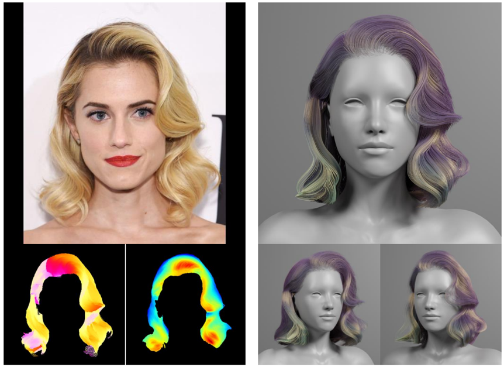
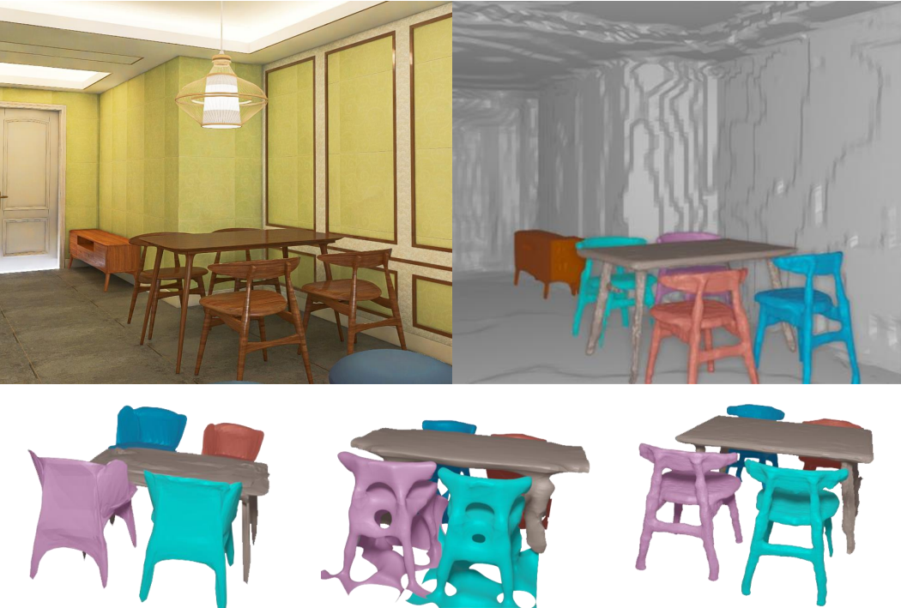
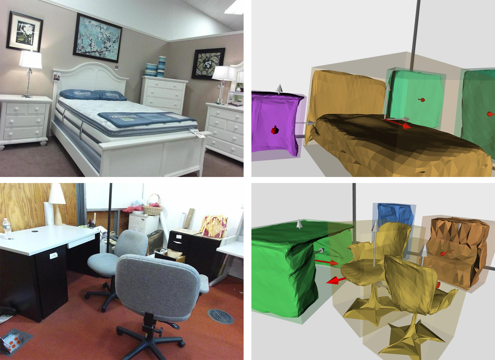
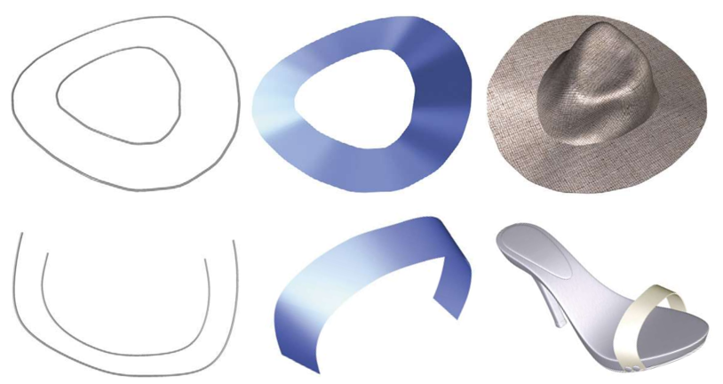
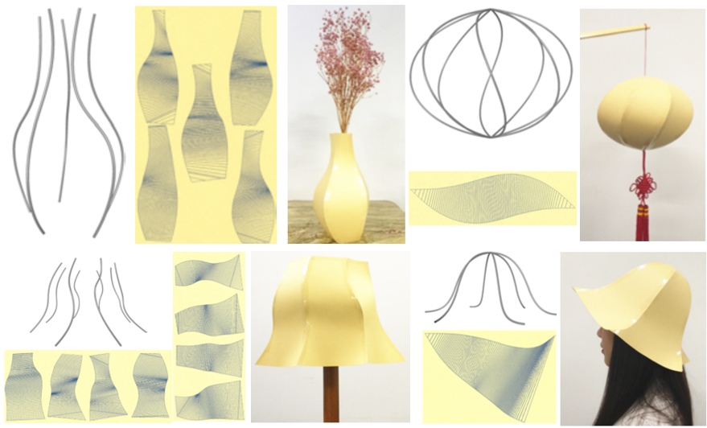
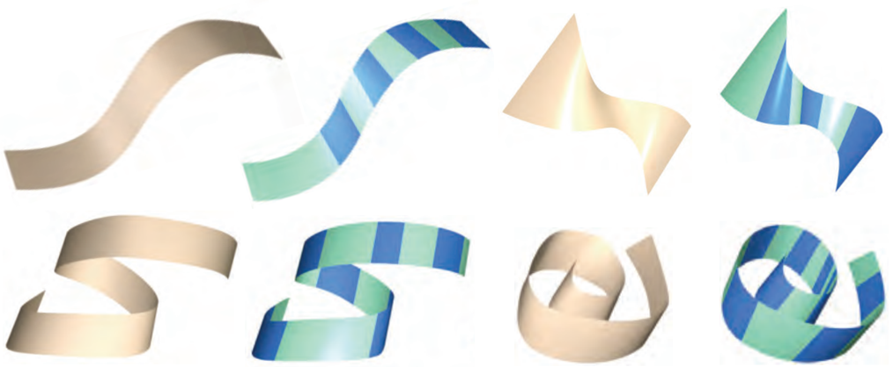
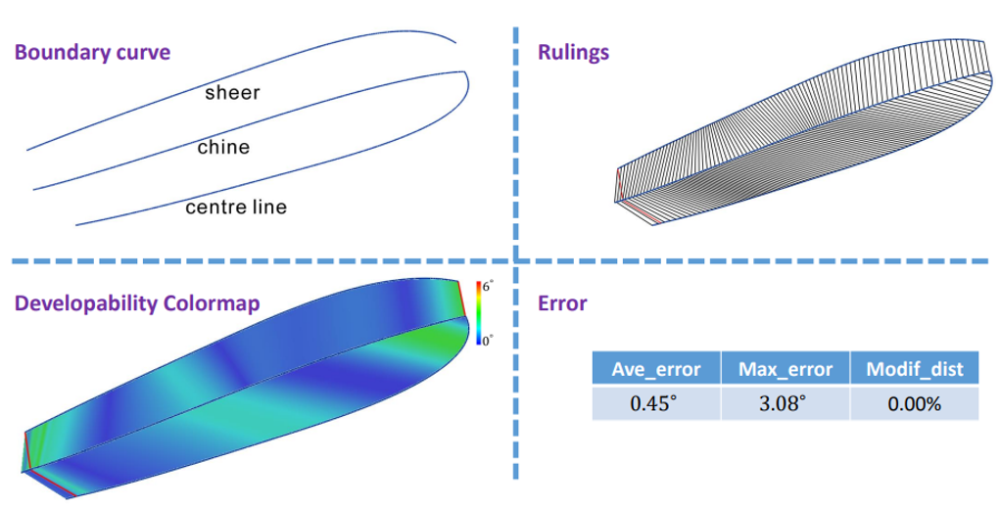
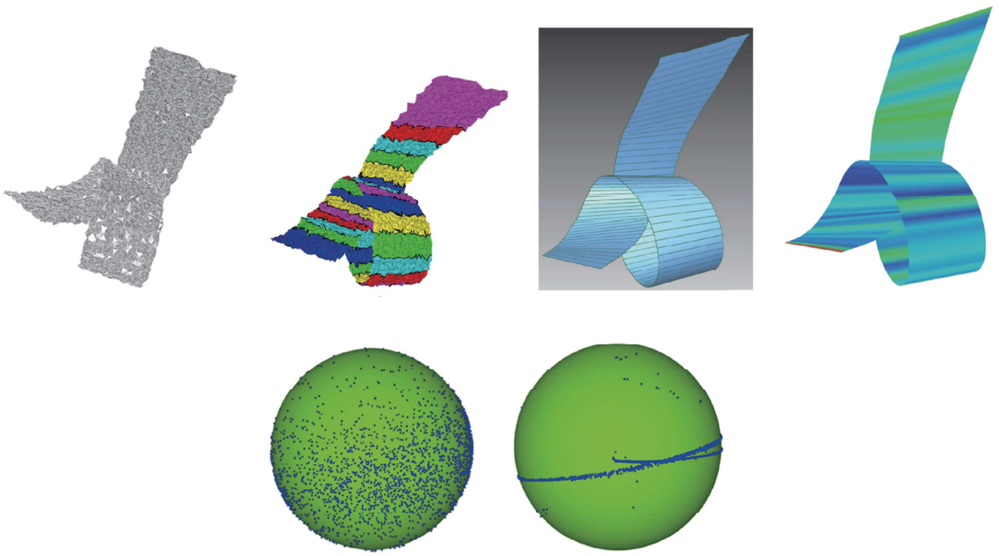

|
I am now a PhD candidate in the School of Science and Engineering(SSE), The Chinese University of Hong Kong, Shenzhen(CUHKSZ), supervised by Prof. Shuguang Cui and Prof. Xiaoguang Han. Previously I obtained my BEng in Software Engineering from Harbin Institute of Technology(HIT), Weihai in 2018. I am interested in geometric modeling and 3D reconstruction, especially for indoor scene and virtual human. |
|  |
HairStep: Transfer Synthetic to Real Using Strand and Depth Maps for Single-View 3D Hair Modeling
Yujian Zheng, Zirong Jin, Moran Li, Haibin Huang, Chongyang Ma, Shuguang Cui, Xiaoguang Han# Accepted to CVPR 2023 |
|  |
Towards High-Fidelity Single-view Holistic Reconstruction of Indoor Scenes
Haolin Liu*, Yujian Zheng*, Guanying Chen, Shuguang Cui, Xiaoguang Han# ECCV 2022 |
|  |
Total3DUnderstanding: Joint Layout, Object Pose and Mesh Reconstruction for Indoor Scenes from a Single Image
Yinyu Nie, Xiaoguang Han#, Shihui Guo, Yujian Zheng, Jian Chang, Jian Jun Zhang CVPR 2020, Oral, Paper Award Nominee |
|
Papers about Developable Surface Modeling |
|
|  |
As-developable-as-possible B-spline Surface Interpolation to B-spline Curves
Pengbo Bo#, Yujian Zheng, Dianhui Chu, Caiming Zhang Computer-Aided Geometric Design, 2020(Proceedings of GMP 2020) |
|  |
Multi-strip Smooth Developable Surfaces from Sparse Design Curves
Pengbo Bo#, Yujian Zheng, Xiaohong Jia, Caiming Zhang Computer-Aided Design, 2019(Proceedings of SPM 2019) |
|  |
Cone Spline Surface Fitting
Xueqing Zhang, Pengbo Bo#, Yujian Zheng, Caiming Zhang Journal of Computer-Aided Design and Computer Graphics (in Chinese), 2019 |
|  |
Quasi-developable Surface Construction Based on Boundary Curve and its Application in Ship Hull Design
Yujian Zheng, Pengbo Bo# Journal of Computer-Aided Design and Computer Graphics (in Chinese), 2018 |
|  |
Developable Surface Reconstruction from Noisy Data with L0-norm Minimization
Pengbo Bo#, Zheng Wang, Caiming Zhang, Yujian Zheng SCIENTIA SINICA Informationis (in Chinese), 2017 |